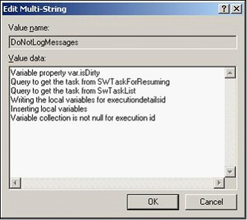

No
You use this feature to control the string messages that are logged into the logger files without making any change to the debug level.
Debug Level: The number of messages getting displayed in the logger console varies based on the Debug level set in the Farm Configuration Wizard.
Example Scenario:
Suppose the debug level is set as 2, and you want to restrict some messages containing text, for example, "Inserting Local Variables" from getting logged into the logger file without changing your current debug level.

Note: These steps control the string messages logged into the AVEVA Work Tasks log files. The same messages appears in the Logger Console.